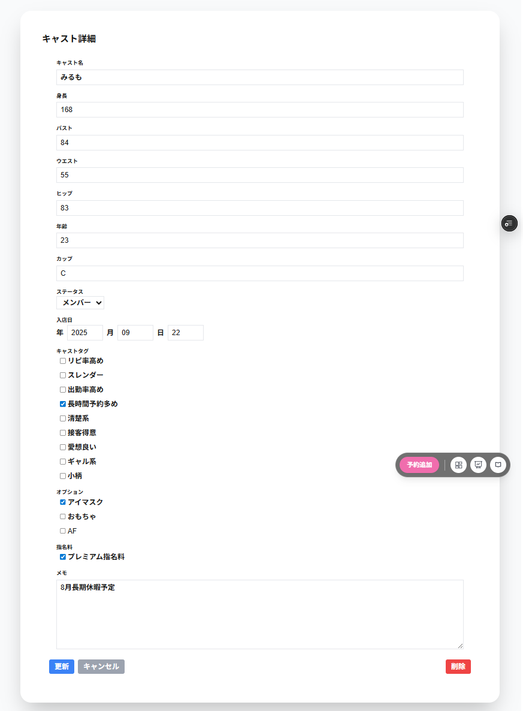

キャスト詳細の編集の画面では以下の項目を編集することができます。
・キャスト
キャスト名を入力することができます。
・身長
キャストの身長を入力することができます。
・バスト
キャストのバストを入力することができます。。
・ウエスト
キャストのウエストを入力することができます。
・ヒップ
キャストのヒップの入力することができます。
・年齢
キャストの年齢を入力することができます。
・カップ
キャストのカップを入力することができます。
・ステータス
キャストのステータスをメンバー・体験入店・新人・退職から選択します。
・入店日
キャストの入店日を入力することができます。
・退店日
キャストの退店日を入力することができます。
ステータスが退職の場合のみ表示されます。
・キャストタグ
キャストのタグを選択することができます。
・オプション
オプションを選択することができます。
データ管理のオプションで特定のキャストのみのオプションとして登録されているオプションのみ表示されます。
・指名料
指名料を選択することができます。
データ管理の指名料で特定のキャストのみの指名料として登録されている指名料のみ表示されます。
・メモ
メモ(200文字以内)を入力することができます。
・更新
更新をクリックすることで、入力した項目で更新します。
・削除
キャストを削除します。
